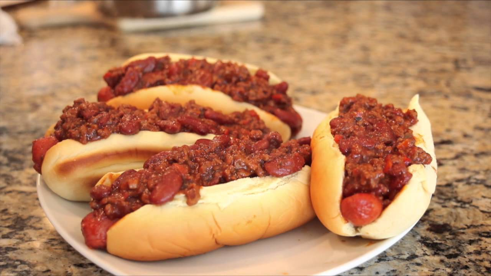

Sonic's Chili Dog

Description
Gotta go fast! That's what you'll be saying on your way to the restroom after eating Sonic's favorite meal, Chili Dogs! This recipe was featured in the first official issue of Sonic the Hedgehog by Archie comics. This is a great recipe for honing your vegetable chopping skills, so make sure you have a sharp knife and cutting board handy!
Ingredients
- Vegetable Oil - 2 tbsp
- Ground Beef - 1 lb
- Onions (chopped) - 1/2 cup
- Peppers (chopped) - 1/2 cup
- Mushrooms (chopped) - 1/2 cup
- Worchestershire Sauce - 1 tbsp
- Can of Crushed Tomatoes - 15 oz
- Barbecue Sauce - 8 oz
- Chili Powder - 1 tsp
- Cumin - 1 tsp
- Oregano - 1 tsp
- Can of Red Kidney Beans (drained) - 8 oz
- Hot Dogs
- Hog Dog Bun
- Cheese for Topping (optional)
Steps
- Heat a large saute pan with vegetable oil.
- Brown ground beef.
- Add chopped onions, peppers, and mushrooms.
- Cook until onions are translucent and mushrooms are lightly brown.
- Add Worcestershire sauce and cook for 30 seconds.
- Add can of crushed tomatoes and barbeque sauce. Simmer for 1/2 hour.
- Add chili powder, cumin, oregano and drained can of red kidney beans.
- Simmer 1 hour.
- Add hot dogs and cook for 15 minutes in sauce.
- Put hot dog on toasted roll. Add melted cheese if desired.
Home